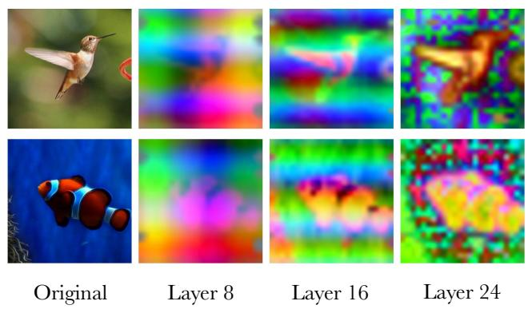

Figureure 2 · Illustration of IdealFigure 2 Illustration of Ideal. Ideal first extract shallow and deep features from a frozen VFM. A lightweight cross-attention module then fuses them into a unified representation. After vector quantization, a feature decoder reconstructs both shallow and deep features. The reconstructed deep semantic feature is finally mapped to pixels by a lightweight pixel decoder for image reconstruction.这张可视化用来解释 IDEAL 学到的中间表征或对齐关系。重点看它是否支持正文里的机制判断。

Figureure 1 · (Left) Depth-wise linear probing of SigLIP2 [50] featuresFigure 1 (Left) Depth-wise linear probing of SigLIP2 [50] features. Each point represents a different VFM block, showing the trade-off between reconstruction fidelity and semantic preservation: shallow blocks reconstruct better but are less semantic, while deeper blocks are more semantic but reconstruct worse. (Right) PCA visualization. By visualizing features across different layers of SigLIP2, we observe a consistent depth-dependent transition: the representations gradually evolve from low-level visual details to high-level semantic concepts.这张可视化用来解释 IDEAL 学到的中间表征或对齐关系。重点看它是否支持正文里的机制判断。